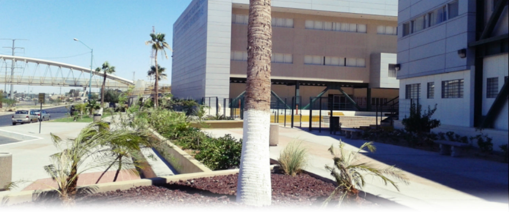
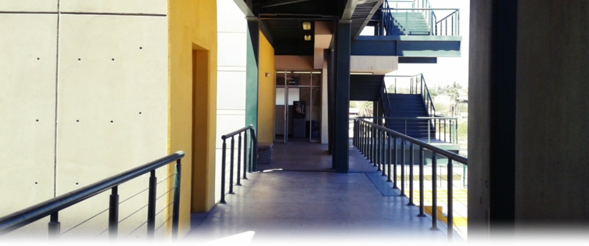
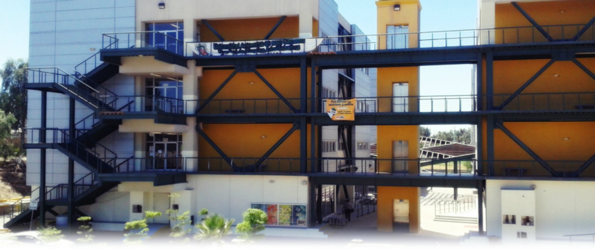

-

UABC una de las mejores universidades públicas del País
-

Orgullosamente cimarrón con valores!
-
 Carreras acreditadas
Carreras acreditadas -
 Bienvenidos a nuestro sitio web cimarrones!
Bienvenidos a nuestro sitio web cimarrones! -
 UABC una de las mejores universidades públicas del País
UABC una de las mejores universidades públicas del País -

Facultad de Ciencias Administrativas UABC
- Menú Alumnos:
- Aspirantes
- Portal Alumnos
- Reinscripciones
- Servicios Sociales
- Pago Web
- Correo UABC
Facultad de Ciencias Administrativas
La Facultad de Ciencias Administrativas de la Universidad Autónoma de Baja California busca ser un centro académico de excelencia en la formación de profesionales y en la generación de conocimientos vanguardistas en las ciencias administrativas y reconocido por su activa participación y la de sus egresados en el desarrollo de la sociedad.
*Eje Central Bulevar Río Nuevo S/N Colonia Agualeguas, 21330 Mexicali, Baja California. Tel. 01(686)582.3377
En este sitio encontrarás...
La Facultad de Ciencias Administrativas de la Universidad Autónoma de Baja california busca ser un centro académico de excelencia en la formación de profesionales y en la generación de conocimientos vanguardistas en las ciencias administrativas y reconocido por su activa participación y la de sus egresados en el desarrollo de la sociedad.
UABC Radio 104.1FM
Anuncios
En esta sección podras ver los ultimos anuncios referentes a las diferentes actividades y tramites que se realizan en esta facultad.


-page-001.jpg){kind=link}
Copyright © 2015 Facultad de Ciencias Administrativas UABC. Todos los derechos reservados.
Diseñado por el departamento de sistematización y desarrollo FCA.